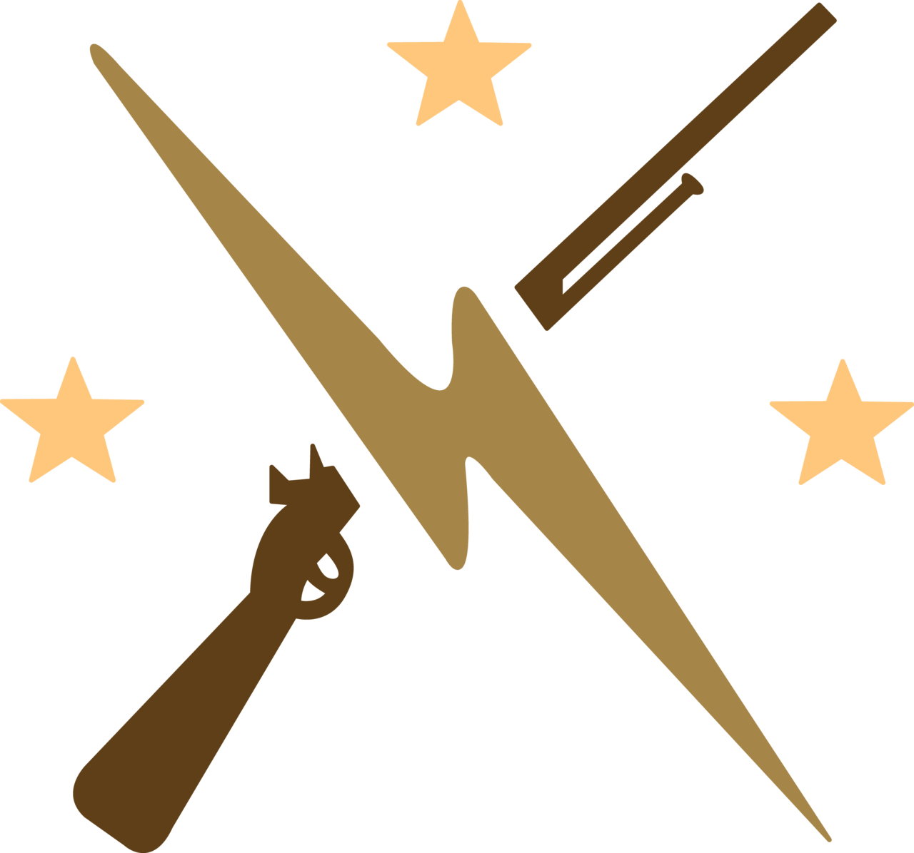

Fallout4
Fallout series has been famous for those who loves open-world rpg game for a long time.
By getting lots of support and interest from many gamers, Bethesda Game Studios released fourth series of Fallout on on November 10, 2015.
More information
Why Bethesda Game?
As being a huge fan of Bethesda, I spent so much time on Skyrim and fallout3.
If you played those games before, Fallout4 is the one you should definitely check out!
Bethesda is very well known to make vast scale of open world game. Player can decide the fate of its own character
because there are alway many sub questions and several endings. No need to say Bethesda has done the smae job on the Fallout4.
Bethesda
Background
Background
Four forces |
Attractive point of this game is that story is depend on how you interact with these forces. |
BrotherhoodIf you want to wear a heavy metal armor called "POWER ARMOR" and destroy anything on your way,
then join the Brotherhood of Steel. They will give you the power armor for you.
One another cool thing about brotherhood is their base is located on the airship which is floating during the game.
Fight on their side and achieve their justice. |
|
|  | |
MinutemanMinuteman's foundation meaning is "we are always here to help you in a minute".
Their priority is helping and saving people who are in danger. When you first encounter with them, they are barely sustained,
but you can be the leader of this group. Make group stronger and spread your influence to entire area.
Watching your force getting stronger surely make the game funnier. |
|
InstitueInstitue is veiled. |
|
RailRoadRailRoad's main goal is to destroy institute. It doesn't mean that they are having nice relationship with brotherhood.
To protect themselves, they made their base in the hidden place. You may have difficult time to meet them. However, once you
find them, you can find out many information about institute and why they are trying to terminate institute. |
What is Vault-Tec?
External activity
They are set up with two opposite goals. Externally, they are the corportaion that makes Nuclear bunkers(shelters) in the underground. Every facility has unique features and designs. Since these bunkers are made to sustain many refugees over extremely long period of time, the level of the facility is generally good. So far, this corportaion seems very charming...right?
Internal activity
Now, let's talk about another purpose. However, I want to mention that internal purpose of Vault-Tec is very interesting that hooks many gamers including me, and maybe even you. The main purpose of the Company is human experiment. Every single shelter has been set up to do different experiment, and some of them are really interesting. Let me give you some example, one shelter purposely put only one male with many females, and opposite case too. There is a shelter that purposely cut the supply to watch reaction. There's even a shelter which didn't even closed the gate properly to watch people getting infested with radiation exposure slowly. Considering the number of shelters are more than 100, they experiment almost everything that you can come up with in your mind.